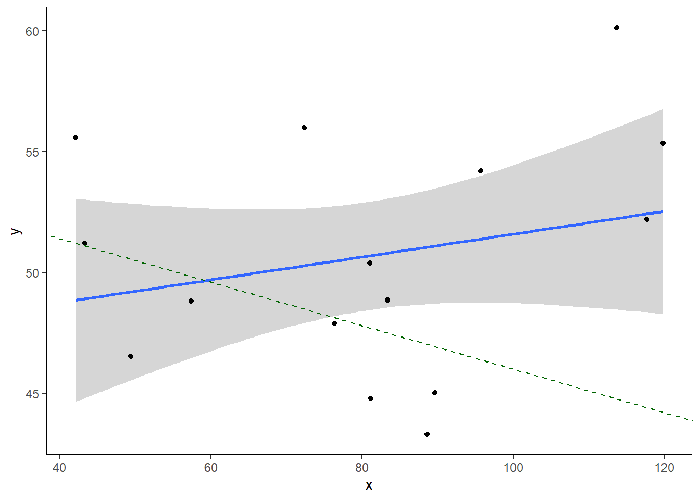
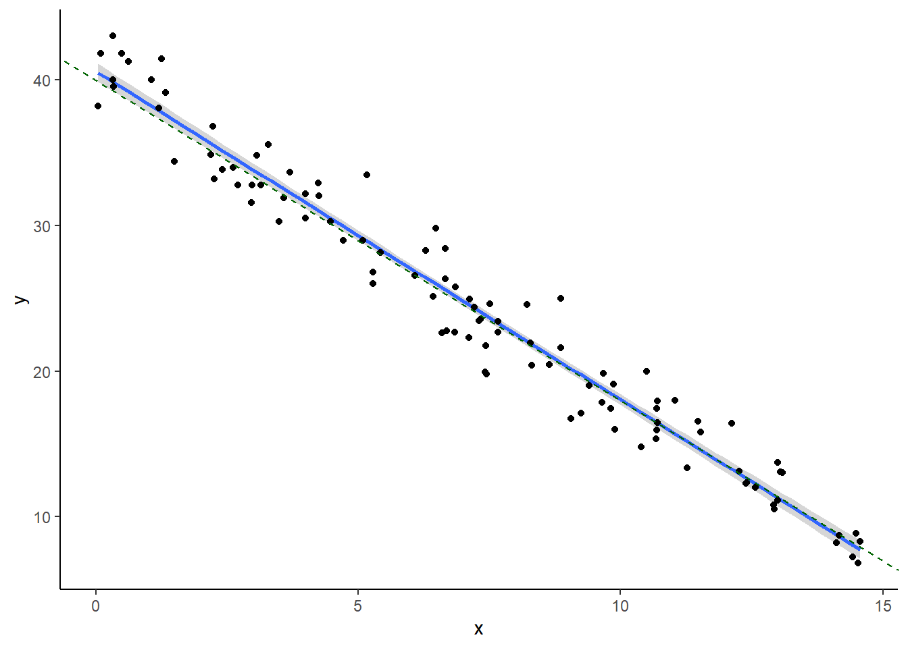
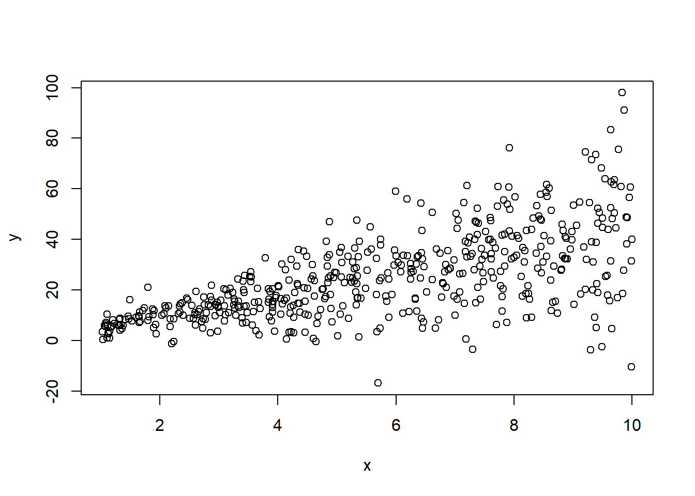
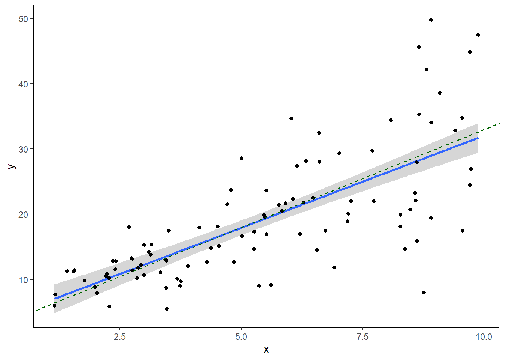
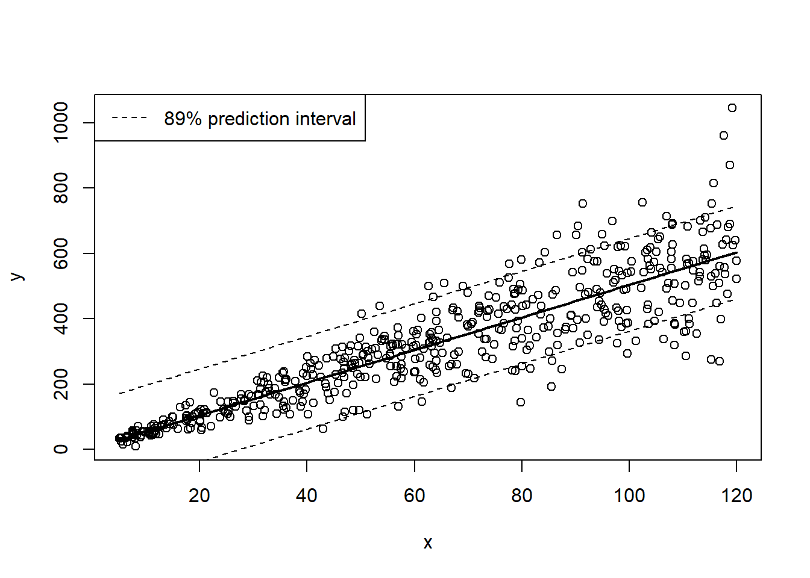
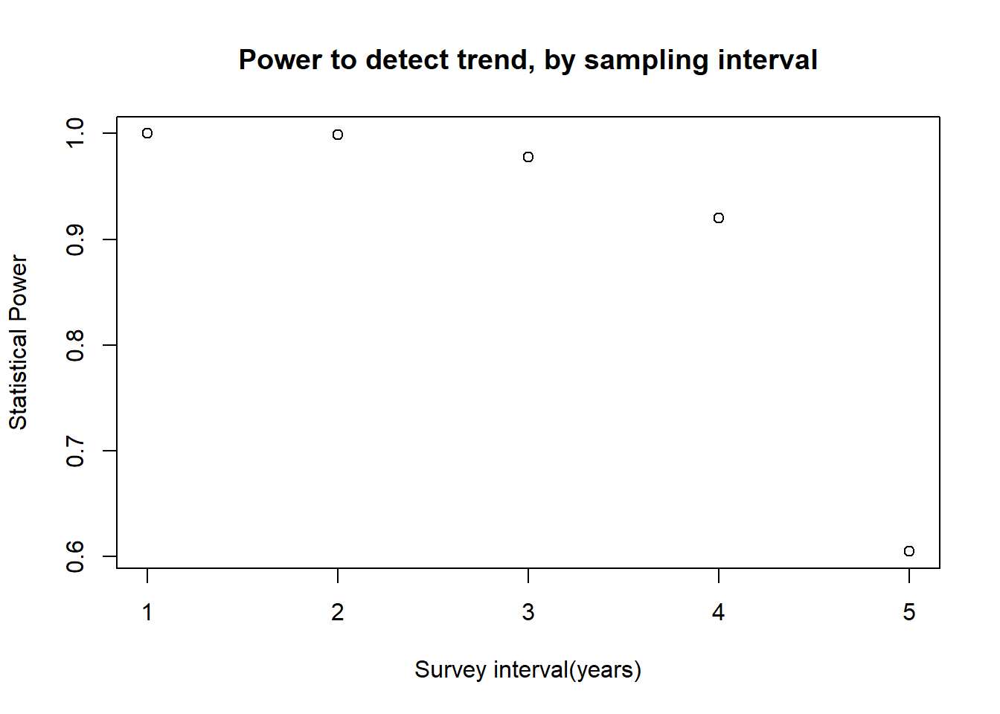
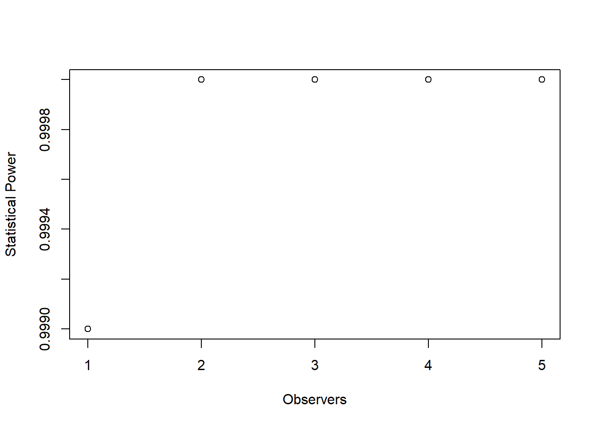
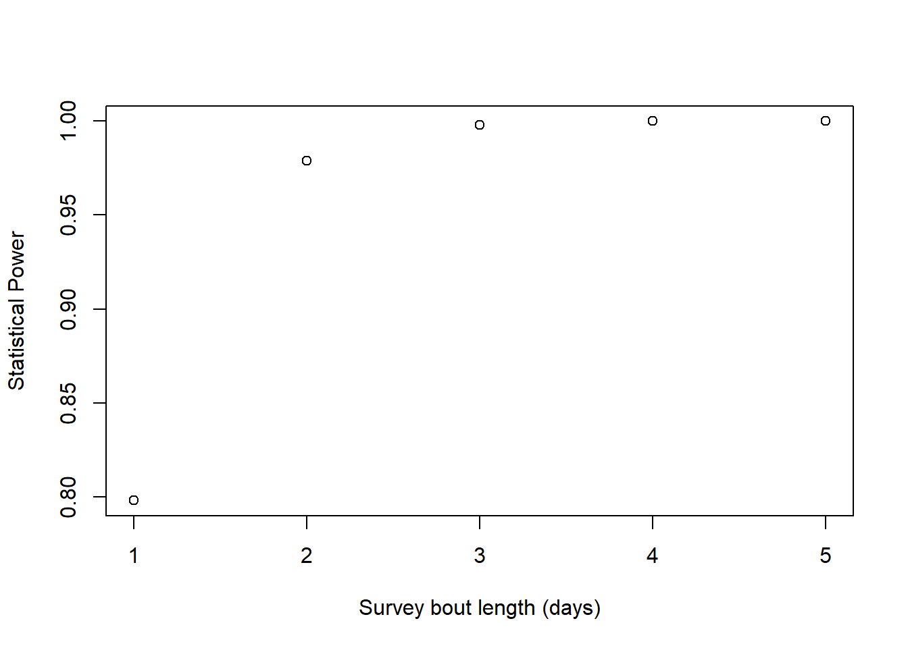

Please complete all assignments by the due date listed in WebCampus. You can work in groups but please submit the materials individually.
When writing functions, it’s often easiest to start off by writing a script, and then when you have everything working properly, wrap the script into a function.
Don’t forget to test your functions!
And remember that your final submission should only contain your functions- not any ancillary code you may have used to develop and test your functions.
Please comment your code thoroughly. Don’t be afraid of for loops and inefficient coding practices, as long as it gets the job done! ## Final projects
Just a reminder: if you haven’t already, please fill out your final project topic and group members on our shared Google Sheets (link via WebCampus)
First, review the basic approach to simulating data in the “Data Generating Models” lecture. Recall that a data simulation model can be constructed by creatively combining deterministic functions with stochastic components via random number generation.
Simulate data that meet the standard assumptions of univariate linear regression (homoskedasticity, normal/independent residual errors). Then run the “lm()” function on your simulated data and assess how closely the parameter estimates match the “true” parameter values.
Write a function called “LMDataSim()” for simulating a sample from a data generating model that meets the assumptions of ordinary linear regression. This function should be specified as follows:
Include your function in your submitted r script! Remember to only submit the function, and not any of the code you used to test your function!
Test your function- for example, using the following code:
LMDataSim(10,xlims=c(40,120),parms=c(55,-0.09,6.8))temp <- LMDataSim(10,xlims=c(40,120),parms=c(55,-0.09,6.8))
coef(lm(y~x,data=temp))[2]Write a function called “LMVerify()” for computing how well the coefficients and residual variance from R’s “lm()” function match the known coefficients of the model used to generate the data. This function should be specified as follows:
Include your function in your submitted r script!
Test your function- for example, using the following code:
trueparms=c(55,-0.09,6.8)
df <- LMDataSim(15,xlims=c(40,120),parms=trueparms)
LMVerify(df, trueparms, plot=T)## `geom_smooth()` using formula = 'y ~ x'
## $fitted_parms
## (Intercept) x sigma
## 46.85352516 0.04733444 4.89305075
##
## $slope_in
## [1] FALSEsimdat2 <- LMDataSim(N=100,xlims=c(0,15),parms=c(40,-2.2,1.8) )
LMVerify(simdat2, c(40,-2.2,1.8), plot=T)## `geom_smooth()` using formula = 'y ~ x'
## $fitted_parms
## (Intercept) x sigma
## 40.582096 -2.254290 1.865611
##
## $slope_in
## [1] TRUEIt is useful to know how to use the ‘predict’ function to compute confidence intervals and prediction intervals for models fitted with ‘lm()’:
## this code assumes that 'yourmodel' is fitted with lm!
predict(yourmodel, interval = c("confidence"), level = 0.95) # for confidence interval
predict(yourmodel, interval = c("prediction"), level = 0.95) # for prediction intervalOther model objects (fitted with lme4, mgcv, etc.) will have similar ‘predict’ methods, but often will only produce standard errors rather than confidence intervals on predictions..
But otherwise all ‘predict’ methods work in a similar way: the predict function allows you to predict a response (and estimate confidence intervals) for any arbitrary covariate values. To do this you need to add a “newdata” argument to the predict function. For example:
nd <- data.frame(x=seq(lb,ub,length=100)) # note that the predictor names need to match the predictor names in the model object!
predict(yourmodel, newdata=nd, interval = c("confidence"), level = 0.95) # for confidence intervalNote that the prediction interval code may occasionally return some warnings- which you may safely ignore!
Does the 90% confidence interval around the slope estimate (estimated from simulated data with a sample size of 10) contain the “true” slope parameter value 90% of the time? In your WebCampus submission, explain how you addressed this question. Did you need more than 100 simulated data sets to answer this question?
NOTE: The previous exercise requires the use of “conditional” operations. That is, if a condition is true, do something. If the condition is false, do something else. The syntax for doing this in R is:
if(TRUE){
do something
}else{
do something else
}
Let’s say I want to determine the number of vector elements that are cleanly divisible by 3. I could write the following code:
inputvector <- c(1:100) # vector of interest
div_by_three <- 0
for(i in 1:length(inputvector)){
if(i%%3==0){ # if there is zero remainder after dividing by three
div_by_three <- div_by_three+1 # then increment the storage variable
}
}
div_by_three## [1] 33An alternative way to do this would be to do use the “which()” function. This tells you which indices in a vector correspond to “TRUE” conditions.
For example,
which(c(FALSE,TRUE,TRUE,FALSE))## [1] 2 3Using “which”, we could re-write the above code to take up just one line!
div_by_three <- length(which(inputvector%%3==0))How might your results from part 2.1 change if your data simulations DID NOT meet the assumptions of ordinary linear regression- e.g., if the variances were not homogeneous?
To test this, write an R function to generate data that violates a basic assumption regarding the error distribution of standard linear regression. Specifically, your function should generate “heteroskedastic” data, such that the variance of the residuals depends on the magnitude of the mean response value ‘y hat’. For this exercise, you’ll still need to specify a linear relationship (y_hat=ax+b) between your response and predictor - the only difference is that the residual variance is no longer homogeneous. To accomplish this, you need to specify a linear relationship for the standard deviation of residual error as well- this proportional relationship (sd=c*|yhat|) will describe how the residual error changes across the range of your predictor variable.
Some other potential violations of standard assumptions we could also introduce into our data simulations if we wanted to:
Write a function called “LMDataSim2()” for drawing a set of random observations from a defined linear relationship that meets all the assumptions of ordinary linear regression except for homoskedasticity. This function should be specified as follows:
Include your function in your submitted r script!
Test your function- for example, using the following code:
test <- LMDataSim2(500,xlims=c(1,10),parms=c(1,4,.5))
plot(test)
Test your function using the ‘LMVerify’ function you wrote earlier…
simdat <- LMDataSim2(100,xlims=c(1,10),parms=c(3,3,0.3))
LMVerify(simdat, c(3,3,0.3), plot=T)## `geom_smooth()` using formula = 'y ~ x'
## $fitted_parms
## (Intercept) x sigma
## 3.825422 2.821913 6.751277
##
## $slope_in
## [1] TRUEIn webcampus, please answer the following question:
Is the estimate of the slope parameter (obtained using the ‘lm()’ function) biased? [note: statistical bias of an estimator is the difference between the estimator’s expected value and the true value of the parameter being estimated]. Ideally, an estimator should be unbiased (bias=0). Briefly explain how you got your answer.
In webcampus, please answer the following question:
Is the confidence interval on your estimate of the slope parameter reliable? Is it really a 90% confidence interval?
In webcampus, please answer the following question:
Use the figure below to evaluate the goodness-of-fit of a linear regression model (heavy line with prediction interval visualized as dashed lines) fitted to the data (open circles). See the code below for reference about how the figure was generated.
In your written response, please describe how this figure helps you to evaluate goodness-of-fit (i.e., could your observed data have been generated by the model?) What ‘red flags’ might make you think that the linear regression model is not adequate for representing these data?
Finally, briefly describe one scenario (possibly hypothetical) where violation of the heteroskedasticity assumption in linear regression could lead to erroneous inference.
Here is an example of a goodness-of-fit visualization:
## goodness of fit visualization...
simdat_uv <- LMDataSim2(500,xlims=c(5,120),parms=c(5,5,.25))
mod = lm(y~x, data=simdat_uv)
nd = data.frame(
x=seq(min(simdat_uv$x),max(simdat_uv$x),length=100)
)
pred = predict(mod,nd,interval="prediction",level=0.89)
plot(simdat_uv)
lines(nd$x, pred[,"fit"],lwd=2)
lines(nd$x, pred[,"lwr"],lwd=1,lty=2)
lines(nd$x, pred[,"upr"],lwd=1,lty=2)
legend("topleft",lty=2,legend="89% prediction interval")
Review the “power analysis” section of the Virtual Ecologist lecture, and complete the following exercises. Recall that we are designing a monitoring program for a population of an at-risk species, and we want to have at least a 75% chance of detecting a decline of 25% or more over a 25 year period. Let’s assume that we are using visual counts, and that the probability of encountering each organism visually is 2% per person-day. The most recent population estimate was 1000 (assume that we know that with certainty).
Develop a function called “GetPower()” that evaluates the statistical power to detect a decline under user-specified types of monitoring designs (e.g., varying numbers of observers, intervals between successive surveys). This function should be specified as follows:
N0=1000,trend=-0.03,nyears=25,people=1,days=3,survint=2,alpha=0.05
Include your function in your submitted r script!
And we can use our new function to do a power analysis:
initabund = 1000
survints <- c(1:5)
powers <- numeric(length(survints))
for(i in 1:length(survints)){
powers[i] <- GetPower(survint=survints[i])
}
plot(powers~survints,xlab="Survey interval(years)",ylab="Statistical Power",main="Power to detect trend, by sampling interval") In webcampus, please answer the following question:
For each variable element of the survey design (survey interval, number of observers, days per survey bout), evaluate how statistical power changes across a range of plausible values. Plot out these relationships.
In webcampus, provide ONE of these plots, describe (briefly!) how you produced the plot, and how this information might help managers to develop effective survey protocols for this species.



Let’s factor in dollar amounts. Let’s assume each observer is paid $200 per day. In addition, let’s assume that the site is fairly remote and it costs $2000 to mount a field expedition (regardless of the number of field technicians). Can you identify a survey strategy to minimize cost while meeting the objective??? What is the optimal survey design in your opinion? Briefly describe how you arrived at this conclusion. [NOTE: don’t overthink this one- you don’t need to find the true optimal solution, just find a solution that meets the objective at relatively low cost and justify your answer!]
CONGRATULATIONS! You have reached the end of lab 2!